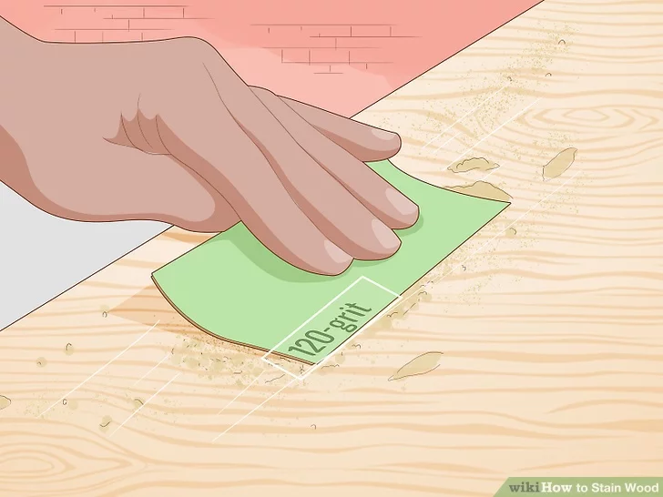
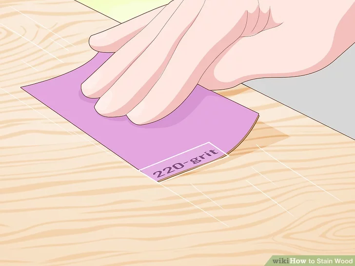
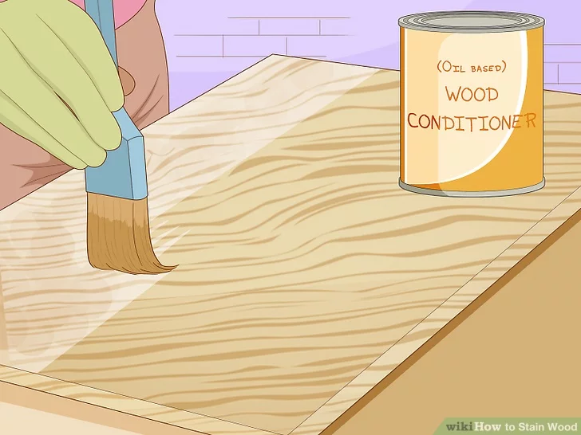
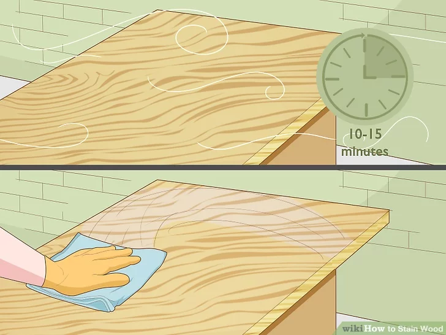
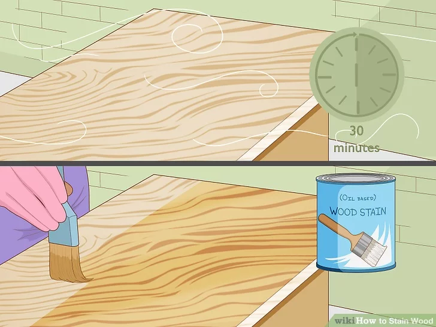
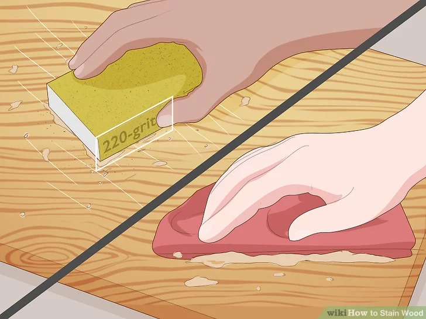
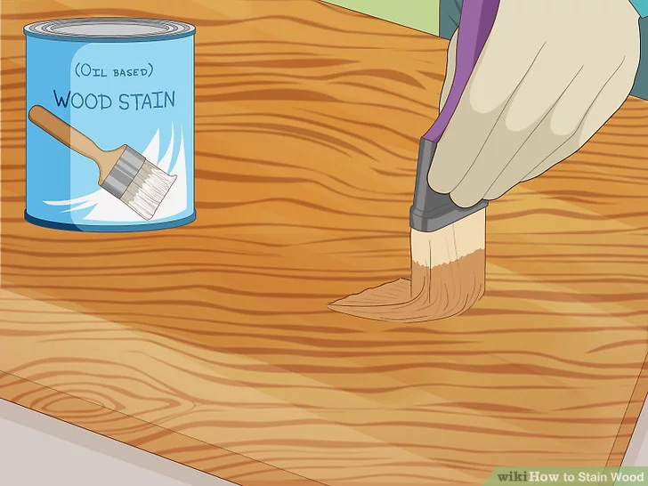
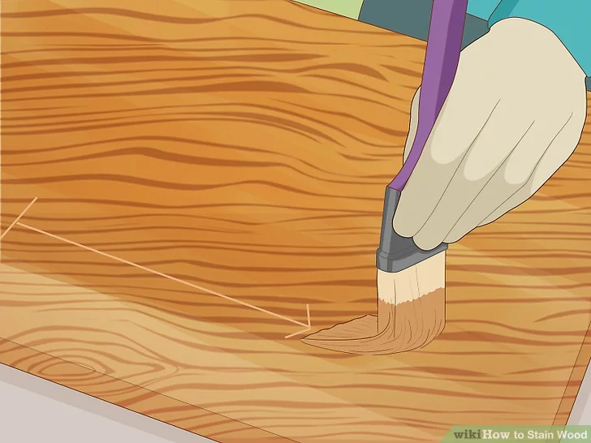
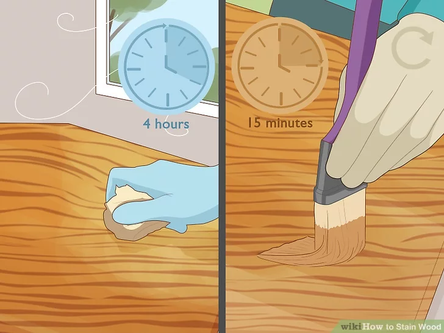

|  |
step 1 :
Sand the wood with 120-grit sandpaper. Rub the sandpaper against the wood going in the direction of the grain. Once you've sanded the whole piece of wood evenly, wipe off the dust using a clean rag.[1]
The 120-grit sandpaper will help get rid of any imperfections in the wood left from dirt or other debris.
Dampen the rag before wiping away the sawdust if desired—just make sure you let the wood dry completely before treating it.
Fill any holes or dents in the wood using a wood filler that matches the color of your wood before sanding, if desired. You can find wood filler at any local home improvement store or online.. |
|  |
step 2 :
Switch to 220-grit sandpaper to create an even surface on the wood. Do a second round of sanding using the higher grit sandpaper. Repeat the same process that you did with the 120-grit sandpaper, rubbing the entire surface before removing the extra sawdust with a clean rag.[2]
The 220-grit sandpaper is a finer grit that will leave a very smooth finish.
Always sand going with the direction of the grain.
|
|  |
step 3 :
Brush a thin layer of conditioner on the surface in the direction of the grain. Dip a natural bristle brush, rag, or sponge into the wood conditioner and apply even strokes to the wood. Cover the entire piece of wood evenly with a thin layer of the wood conditioner.[3]
The wood should be clean and dry without any other finishes on it before using a wood conditioner. |
|  |
step 4 :
Wait 10-15 minutes for the conditioner to absorb and wipe off the excess. Use a clean rag to gently wipe away the extra wood conditioner. Use small strokes to wipe it off, going in the direction of the wood grain.[4]
Read the instructions on the wood conditioner to see how long they recommend leaving it on the wood, following their advice to ensure the best results. |
|  |
step 5 :
Let the conditioner dry for 30 minutes and stain the wood within 2 hours. Set a timer for 30 minutes so you know when the wood should be dry. Aim to stain your wood within 2 hours of the wood conditioner drying for the best results.[5]
.
|
|  |
step 6 :
Sand the wood with 220-grit sandpaper. Once the wood conditioner is dry, use 220-grit sandpaper or higher to sand the wood. Sand in the direction of the grain, and use a clean cloth to remove the dust created from sanding.[6] [7]
Avoid using sandpaper of a lesser grit than 220, otherwise you might scratch the wood.
Remove any hardware so your piece is ready for staining. |
|  |
step 7 :
Use a rag or brush to apply the stain to the wood. Stir your can of stain thoroughly using a wooden or plastic stirring utensil. Dip your rag or brush into the stain and spread it on the wood, working your way across the piece in sections. Apply it going in the same direction as the wood grain.[8]
Wear gloves to protect your hands from the stain. |
|  |
step 8 :
Apply the stain in a thin, even layer. Use long strokes to brush or rub the stain onto the wood. Don't worry too much about getting the stain absolutely perfect because you'll be wiping most of it off. Focus on making sure there aren't any major streaks or splatters of stain anywhere on the wood.[9]
Continue using long, slow strokes to even out the color of the stain as much as possible. |
 |
step 9 :
Wipe away the excess stain after 5-15 minutes, depending on your desired shade. The longer you leave the stain on the wood, the darker it will get. Use a clean rag to wipe off the excess stain, rubbing the wood lightly going in the direction of the grain to dab up the extra pigment. Be thorough, wiping the stain into the wood and creating a thin, even layer of stain.[10]
Don't let the stain sit for longer than15 minutes.[11]
It’s best to wipe your stain up sooner rather than later—you can always add additional coats if it’s too light, but it’s much harder to remove stain that’s too dark.
Pay careful attention to any darker or splotchy areas, wiping them up with the rag so the wood is an even color.
You may need to use multiple rags. |
|  |
step 10 :
Let the stain dry for 4 hours before adding additional coats, if desired. Let the wood lay flat in a well-ventilated area for the 4 hours that it’s drying. If you decide you still want it darker, apply another coat of the stain by brushing it on in the direction of the grain, waiting 5-15 minutes for it to absorb, and then wiping it off again with a clean cloth.[12] [13]
Repeat this as many times as necessary until you get your desired shade.
Make sure you let each coat of stain dry completely before applying an additional one.
After you've waited 4 hours and feel that the stain is dry, your wood is ready for a sealant. |